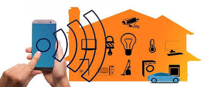
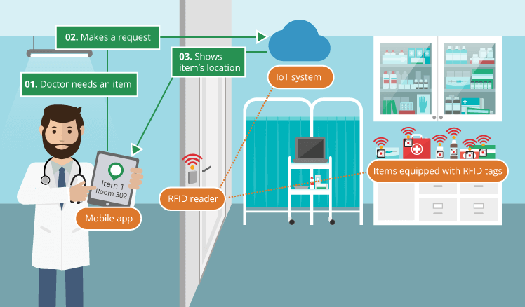

In a nutshell, the Internet of Things is the concept of connecting any device (so long as it has an on/off switch) to the Internet and to other connected devices. The IoT is a giant network of connected things and people – all of which collect and share data about the way they are used and about the environment around them.
That includes an extraordinary number of objects of all shapes and sizes – from smart microwaves, which automatically cook your food for the right length of time, to self-driving cars, whose complex sensors detect objects in their path, to wearable fitness devices that measure your heart rate and the number of steps you’ve taken that day, then use that information to suggest exercise plans tailored to you. There are even connected footballs that can track how far and fast they are thrown and record those statistics via an app for future training purposes
How does it work?
Devices and objects with built in sensors are connected to an Internet of Things platform, which integrates data from the different devices and applies analytics to share the most valuable information with applications built to address specific needs.
These powerful IoT platforms can pinpoint exactly what information is useful and what can safely be ignored. This information can be used to detect patterns, make recommendations, and detect possible problems before they occur.
For example, if I own a car manufacturing business, I might want to know which optional components (leather seats or alloy wheels, for example) are the most popular. Using Internet of Things technology, I can:
Use sensors to detect which areas in a showroom are the most popular, and where customers linger longest;
Drill down into the available sales data to identify which components are selling fastest;
Automatically align sales data with supply, so that popular items don’t go out of stock.
The information picked up by connected devices enables me to make smart decisions about which components to stock up on, based on real-time information, which helps me save time and money.
With the insight provided by advanced analytics comes the power to make processes more efficient. Smart objects and systems mean you can automate certain tasks, particularly when these are repetitive, mundane, time-consuming or even dangerous. Let’s look at some examples to see what this looks like in real life.
iot application in our life
Scenario #1: IoT in your home
Imagine you wake up at 7am every day to go to work. Your alarm clock does the job of waking you just fine. That is, until something goes wrong. Your train’s cancelled and you have to drive to work instead. The only problem is that it takes longer to drive, and you would have needed to get up at 6.45am to avoid being late. Oh, and it’s pouring with rain, so you’ll need to drive slower than usual. A connected or IoT-enabled alarm clock would reset itself based on all these factors, to ensure you got to work on time. It could recognize that your usual train is cancelled, calculate the driving distance and travel time for your alternative route to work, check the weather and factor in slower travelling speed because of heavy rain, and calculate when it needs to wake you up so you’re not late. If it’s super-smart, if might even sync with your IoT-enabled coffee maker, to ensure your morning caffeine’s ready to go when you get up

Scenario #2: IoT in transport
Having been woken by your smart alarm, you’re now driving to work. On comes the engine light. You’d rather not head straight to the garage, but what if it’s something urgent? In a connected car, the sensor that triggered the check engine light would communicate with others in the car. A component called the diagnostic bus collects data from these sensors and passes it to a gateway in the car, which sends the most relevant information to the manufacturer’s platform. The manufacturer can use data from the car to offer you an appointment to get the part fixed, send you directions to the nearest dealer, and make sure the correct replacement part is ordered so it’s ready for you when you show up.
Scenario #3 iot in hospital
Lots of people work around the hospital, and obviously, it is a crowded, busy place. Stealing medical equipment is a crime that can cost a life. Sometimes doctors are so busy that they don’t have that opportunity to observe multiple patients simultaneously. Internets of Things in healthcare applications accumulate all the problems and bring the solution.

Scenario #4 iot in education
IoT in schools means a better-connected and more collaborative future for education. IoT devices give students better access to everything from learning materials to communication channels, and they give teachers the ability to measure student learning progress in real-time.
Just as important, the IoT can improve things that complement a solid education — stuff like security via the use of smart cameras, climate control via the use of smart HVAC systems. Smart lighting systems are big, too, providing better and more energy efficient illumination.
As one education professional said of the IoT, “It is not about the technology; it’s about sharing knowledge and information, communicating efficiently, building learning communities and creating a culture of professionalism in schools. These are the key responsibilities of all educational leaders.”
.jpg)